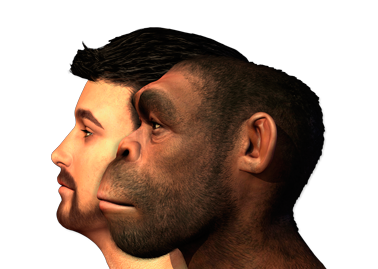

La Prehistoria
Conocer cómo vivían las comunidades humanas antes de la invención de la escritura nos permite comprender el proceso de evolución cultural en los primeros tiempos de la humanidadGuía del profesor
Recursos
00 - El proceso de hominización
Video que muestra el proceso evolutivo de los homínidos hasta el ser humano actual

01 - Identifica a nuestros antepasados
Actividad para ordenar cronológicamente las distintas especies de homínidos

02 - Refuerza tu aprendizaje: Los orígenes del ser humano
Interactivo que muestra la evolución desde los primeros homínidos hasta el Homo sapiens
03 - El Paleolítico
Video que presenta las características principales del Paleolítico
04 - Refuerza tu aprendizaje: Identifica las características del Paleolítico
Actividad para recordar los principales rasgos del Paleolítico

05 - Refuerza el aprendizaje: El Mesolítico
Actividades sobre el Mesolítico

06 - Reconoce los cambios del Neolítico y la Edad de los Metales
Actividad que requiere completar un texto sobre el Neolítico y las causas que explican el paso a la Edad de los Metales
07 - El Neolítico
Video que detalla la importancia de los cambios surgidos en el Neolítico: el nacimiento de la agricultura y la ganadería y el paso del nomadismo al sedentarismo

08 - Conoce la revolución neolítica
Actividad para conocer la importancia de las transformaciones que comportó la revolución neolítica

09 - Refuerza tu aprendizaje: El Neolítico
Actividades sobre el Neolítico
10 - El Neolítico y la Edad de los Metales
Vídeo que repasa los principales rasgos del Neolítico y de la Edad de los Metales a partir del ejemplo peninsular

11 - Relaciona conceptos con su período histórico
Actividad para agrupar una serie de conceptos en función de la etapa de la prehistoria a la que pertenecen
12 - Arte y religión en la Edad de Piedra
Vídeo que repasa las principales manifestaciones y características de la pintura rupestre
13 - Reconoce los distintos monumentos megalíticos
Actividad que requiere reconocer los distintos monumentos megalíticos construidos entre finales del Neolítico y la Edad de los Metales

14 - Refuerza tu aprendizaje: El arte en la prehistoria
Actividades sobre El arte en la prehistoria

15 - Competencias: comentario de una obra de arte de la prehistoria
Actividad que propone el análisis y comentario de una obra de arte perteneciente a cualquier período de la prehistoria según el procedimiento sugerido
16 - Proyecto: análisis de las costumbres del ser humano
Actividad que guía el trabajo colaborativo de investigación sobre la evolución de las formas de vida de las comunidades humanas a lo largo de la historia